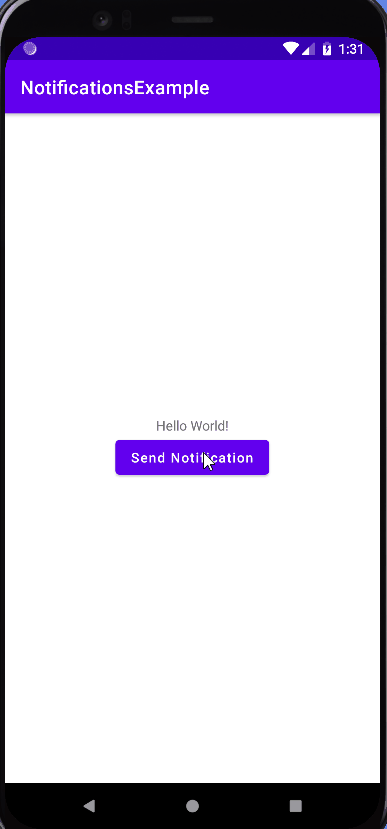

A notification is a message that Android displays outside of the app's UI to provide the user with reminders,
messages from other people, and other timely information about the app. Users can tap the notification to open the app or perform an action directly from the notification.
Notifications are displayed to users in different locations and formats (for example, as an icon in the status bar, a more detailed entry in the notifications side panel,
or a badge on the app icon), as well as on wearables automatically synchronized.
Notification anatomy
The design of a notification is determined by system templates—your app simply defines the contents for each portion of the template.
Some details of the notification appear only in the expanded view.
A notification with basic details
The most common parts of a notification are indicated in figure 7 as follows:
Small icon: This is required and set with setSmallIcon()
App name : This is provided by the system.
Time stamp : This is provided by the system but you can override with setWhen() or hide it with setShowWhen(false).
Large icon : This is optional (usually used only for contact photos; do not use it for your app icon) and set with setLargeIcon() .
Title : This is optional and set with setContentTitle()
Text : This is optional and set with setContentText()
Creating Notifications
To create notifications we use the following code, first we have to create the builder.
As you can see, a notification channel param is passed. We'll see it later.
var builder = NotificationCompat.Builder(this, CHANNEL_ID)
Once the builder is created, we add the options we need. Among others we can find the following:
We can also indicate how the flashing LED will look if the mobile has it, as well as the vibration of the mobile.
//1 sec on 1 sec off
builder.setLights(Color.MAGENTA, 1000, 1000)
We can indicate which activity will be opened when the user clicks on the notification.
To do this, you have to pass a PendingIntent, which is nothing more than an encapsulated intent but tells the application to launch it, typically the system, which must be launched with our application's permissions.
builder.setContentIntent(pendingIntent)
PendingIntent
A PendingIntent is a token that you give to a foreign application (e.g. NotificationManager, AlarmManager, Home Screen AppWidgetManager,
or other 3rd party applications), which allows the foreign application to use your application's permissions to execute a predefined piece of code.
To create a PendingIntent we have several options:
Add it to the stackbuilder, and we have the option to indicate who will be its parent in the manifest, so the back arrow will appear.
//That is the real intent
val intent = Intent(this, YesActivity::class.java).apply {
putExtra(YES_EXTRA_KEY, "This text goes to Yes Activity")
}
//This makes the stack builder with the parent activity (optional)
//If we don't set it when we press back button the app will exit
val stackBuilder = TaskStackBuilder.create(this)
stackBuilder.addParentStack(YesActivity::class.java)
stackBuilder.addNextIntent(intent)
return stackBuilder.getPendingIntent(PENDING_REQUEST,
PendingIntent.FLAG_UPDATE_CURRENT)
}
We have to indicate who is the parent of this activity in the AndroidManifest.xml
 When we press the back button, the application closes
We can also make use of getActivity() function without flags.
private fun makePendingIntent():PendingIntent {
val intent = Intent(this, NotificationActivity::class.java)
return PendingIntent.getActivity(this, PENDING_REQUEST, intent, PendingIntent.FLAG_UPDATE_CURRENT)
}
In this case, we return to the previous activity if it is created when pressing back, but the return arrow does not generate
When we press the back button, the application closes
Using getActivity with flags to open an activity that cannot be accessed from the normal flow of the application. That is, we will only use it to attend to the notification, if we press the back button, it exits the application.
private fun makePendingIntentNo():PendingIntent {
//This activity is only accessed by notifications, and what we want later is to close the app
//So system creates a new task just for this activity instead of adding it to the stack
val intent = Intent(this, NoActivity::class.java).apply {
flags = Intent.FLAG_ACTIVITY_NEW_TASK or Intent.FLAG_ACTIVITY_CLEAR_TASK
}
return PendingIntent.getActivity(this, 0, intent, 0)
}
When we press the back button, the application closes
We can also add response actions to the notification
And if we want them to occupy the entire width of the notification, we will use the following option.
Finally, we can say that the notification is canceled (closed) when clicking on it.
builder.setAutoCancel(true)
Or that it closes after a while.
Next, to fire the notification, we need to call the notify() method of the NotificationManager. You have to pass the identifier of the notification to later be able to reference it.
with(NotificationManagerCompat.from(this)) {
//notificationId is a unique int for each notification that you must define
notify(notificationId, builder.build())
}
Notification creation example
private fun makeNotificaton() {
val builder: NotificationCompat.Builder =
NotificationCompat.Builder(this, CHANNEL_ID)
with(builder){
setSmallIcon(R.drawable.ic_baseline_access_alarm)
setContentTitle("Notification Example")
setContentText("This is my notification")
setStyle(NotificationCompat.BigTextStyle()
.bigText("This is a long text that can't it into a single line. This is a long text that can't it into a single line. This is a long text that can't it into a single line. This is a long text that can't it into a single line"))
color = Color.RED
priority = NotificationCompat.PRIORITY_DEFAULT
//1 sec on 1 sec off
setLights(Color.MAGENTA, 1000, 1000)
//1 sec on 1 sec off 1 sec on 1 sec off
setVibrate(longArrayOf(1000, 1000, 1000, 1000))
//setSound()
setDefaults(Notification.DEFAULT_SOUND)
//When we click on the notification
setContentIntent(pendingIntent)
setVisibility(VISIBILITY_PUBLIC)
addAction(R.drawable.ic_yes, "Yes", pendingIntentYes)
addAction(R.drawable.ic_no, "No", pendingIntentNo)
setFullScreenIntent(pendingIntent, true)
//setTimeoutAfter(5000L) //cancels notification after 5 sec
setAutoCancel(true)
}
val notificationManagerCompat = NotificationManagerCompat.from(this)
//Launch the notification
notificationManagerCompat.notify(NOTIFICATION_ID , builder.build())
}
Cancel notifications from another activity
If we want to cancel, delete a notification from the notification bar, we must cancel it using the cancel() method and the ID of the notification.
Starting from version 8 of Android, (Oreo) we can create different types of notifications for our application.
In order to manage them and configure their parameters we need to create a notification channel . We will do it in the following way.
val notificationChannel = NotificationChannel(CHANNEL_ID,
CHANNEL_NAME,
NotificationManager.IMPORTANCE_DEFAULT)
As you can see, we pass a Channel_ID, a Channel_Description, among others...
Thus, the user, from application settings and notifications, was able to choose whether to mute one channel and not another.
Note: For Android versions 8 and later if the notification does not have a notification channel, the notification will not be displayed.
Notification channel creation example.
private fun createNotificationChannel() {
//Notifications channels are just available from Oreo version and above.
if (Build.VERSION.SDK_INT >= Build.VERSION_CODES.O) {
//Features of channel
val notificationChannel = NotificationChannel(CHANNEL_ID,
CHANNEL_NAME,
NotificationManager.IMPORTANCE_DEFAULT)
val notificationManager = getSystemService(NOTIFICATION_SERVICE) as NotificationManager
//Notification is visible on the App's icon
notificationChannel.setShowBadge(true)
//Creates the notification
notificationManager.createNotificationChannel(notificationChannel)
}
}
Finally, we have to give android.permission.POST_NOTIFICATIONS permission to the APP.
So we set the permission in the AndroidManifest.xml
Android apps can send or receive broadcast messages from the Android system and other Android apps.
These broadcasts are sent when an event of interest occurs. For example, the Android system sends broadcasts when different system events occur,
such as when the system starts up or when the device starts to charge.
Apps can also send custom broadcasts, for example to notify other apps of something they might be interested in (like when some new data was downloaded)
Apps can register to receive specific broadcasts. When a broadcast is sent, the system automatically redirects broadcasts to apps that have subscribed to receive
that particular type of broadcast.
Broadcasts can generally be used as a messaging system between apps and outside of the normal user flow.
However, you should be careful not to abuse the opportunity to respond to broadcasts and run background tasks that can contribute to slow system performance.
About system emissions
The system automatically sends broadcasts when various system events occur, such as when the system turns airplane mode on or off.
System broadcasts are sent to all apps that have subscribed to receive the event.
The broadcast message itself is wrapped in an Intent object whose action string identifies the event that occurred
(for example, android.intent.action.AIRPLANE_MODE )
The intent can also contain additional information included in its additional field.
For example, the airplane mode intent includes an additional boolean value indicating whether or not the mode is on.
For a complete list of system broadcast actions, see the BROADCAST_ACTIONS.TXT file in the Android SDK inside
\platforms\VERSION\data.
Each issue action has an associated constant field.
For example, the value of the ACTION_AIRPLANE_MODE_CHANGED constant is android.intent.action.AIRPLANE_MODE.
Documentation of each issue action is available in its associated constant field.
Changes in system emissions
As the Android platform evolves, the behavior of system broadcasts changes periodically.
Please note the following changes if your app targets Android 7.0 (API level 24) or higher, or is installed on devices running Android 7.0 or higher.
How to receive broadcasts
Apps can receive broadcasts in two ways:
through listeners declared in the manifest
through listeners registered in the context
Receivers declared in the manifest
If you declare a broadcast receiver in your manifest, the system launches the app (if it's not already running) when the broadcast is sent.
Note: If your app targets API level 26 or higher, you cannot use the manifest to declare a listener for implicit broadcasts
(broadcasts that are not specifically targeted to your app), except for some implicit broadcasts that are exempt from that restriction.
In most cases, you can use scheduled tasks instead.
To declare a broadcast receiver in the manifest, perform the following steps
Specify the <receiver> element in your app's manifest. AndroidManifest.xml
Intent filters specify the broadcast actions that your listener subscribes to.
Create the BroadcastReceiver subclass, and then implement onReceive(Context, Intent).
The broadcast receiver in the following example logs and displays the content of the broadcast:
private const val TAG = "MyBroadcastReceiver"
class MyBroadcastReceiver : BroadcastReceiver() {
override fun onReceive(context: Context, intent: Intent) {
StringBuilder().apply {
append("Action: ${intent.action}\n")
append("URI: ${intent.toUri(Intent.URI_INTENT_SCHEME)}\n")
toString().also { log ->
Log.d(TAG, log)
Toast.makeText(context, log, Toast.LENGTH_LONG).show()
}
}
}
}
The system package manager registers the receiver when the app is installed.
The receiver then becomes an entry point to your standalone app, meaning that the system can launch the app and deliver the stream if the app is not running.
The system then creates a new BroadcastReceiver component object to handle each broadcast it receives.
This object is valid only during the call to onReceive(Context, Intent). Once this method returns your code, the system considers the component to be no longer active.
Receivers registered in the context
To register a listener with a context, perform the following steps:
Create an instance of BroadcastReceiver .
val br: BroadcastReceiver = MyBroadcastReceiver()
Create an IntentFilter and register the receiver by calling registerReceiver(BroadcastReceiver, IntentFilter)
val filter = IntentFilter(ConnectivityManager.CONNECTIVITY_ACTION).apply {
addAction(Intent.ACTION_AIRPLANE_MODE_CHANGED)
}
registerReceiver(br, filter)
Note: To register to receive local broadcasts, call LocalBroadcastManager.registerReceiver(BroadcastReceiver, IntentFilter) instead.
Receivers registered to the context receive broadcasts as long as their registration context is valid.
For example, if you register in an Activity context, you will receive broadcasts as long as the activity is not removed.
If you register with the application context, you will receive broadcasts while the app is running .
To stop receiving broadcasts, call unregisterReceiver(android.content.BroadcastReceiver).
Be sure to unregister the receiver when you no longer need it or the context is no longer valid.
How to submit broadcasts
Android offers three ways for apps to send broadcasts:
The sendOrderedBroadcast(Intent, String) method sends broadcasts to one receiver at a time.
Because one listener is executed at a time, the listener can either propagate a result to the next,
or it can abort broadcast altogether so that it is not transmitted to others.
The order in which listeners are executed can be controlled with the android:priority attribute of the matching intent filter;
receivers with the same priority will be executed in random order.
The sendBroadcast(Intent) method sends broadcasts to all receivers in an unspecified order,
which is called a normal broadcast. This method is more efficient, but it means that the receivers cannot read the results of other receivers,
propagate the data received from the broadcast, or abort the broadcast.
The LocalBroadcastManager.sendBroadcast method sends broadcasts to receivers that are in the same app as the sender.
If you don't need to send broadcasts between apps, use local broadcasts. The implementation is much more efficient (inter-process communication is not required)
and you don't have to worry about any security issues related to other apps that may receive or send broadcasts.
The following code snippet shows how to send a broadcast by creating an intent and calling sendBroadcast(Intent).
The broadcast message is wrapped in an Intent object.
The intent's action string must provide the app's Java package name syntax and also uniquely identify the emitting event.
You can attach additional information to the intent with putExtra(String, Bundle).
You can also limit a broadcast to a set of apps in the same organization by calling setPackage(String) on the intent
How to restrict emissions with permissions
Permissions allow you to restrict broadcasts to a set of apps that have specific permissions. You can apply restrictions on both the sender and receiver of a broadcast.
How to Submit Emissions with permissions
When you call sendBroadcast(Intent, String) or sendOrderedBroadcast(Intent, String, BroadcastReceiver, Handler, int, String, Bundle),
you can specify a permission parameter. Only receivers who requested that permission with the tag in their manifest (and who were later granted the permission
if it's dangerous) can receive the broadcast. For example, the following code sends a broadcast:
You can specify an existing system permission like SEND_SMS
or define a custom permission with the <permission> element.
How to Receive Emissions with Permissions
If you specify a permissions parameter when registering a broadcast receiver (either with registerReceiver(BroadcastReceiver, IntentFilter, String, Handler)
or in the <receiver> tag in your manifest), only broadcasters that requested the permission with the <uses tag -permission>
in your manifest (and those subsequently granted the permission if it's dangerous) can send an intent to the receiver.
For example, suppose your receiving app has a receiver declared in the manifest as shown below:
Exercise: Create an application that has a broadcast receiver (With an action other than the example on Github) that causes a notification to be fired
Practice Chat with Notifications & Broadcast Receiver
Introduction
The goal of this practice is to create a chat between two of our applications.
As an application it doesn't make much sense since sending a chat message to another application installed on our same device isn't useful at all.
But it will allow us to practice the concepts seen in this unit, such as notifications and broadcast receivers.
Functioning.
Once the two applications are installed and running, when a message is sent in one of them, it will be done so that the recipient of the other captures it and vice versa.
To do this, remember that the actions that are text strings must be the same.
Messages: 4pts
All messages in the session should appear, that is, until the apps are closed.
The date and time of arrival will be added to each message.
Each message will be aligned to the left or right depending on the sender, which can be: the application itself or the other application.
You can send as many messages as you want.
Notifications: 3.5pts
Every time an application (your receiver) detects a new message, it will launch a notification.
The title of the notification will be the sender of the message (the other application) and the content of the message sent by the other application.
If we click on the notification, it will show us the main screen with the messages.
Be careful, if your PendingIntent has an intent and you don't use the proper flags, it will fire the MainActivity again, going into the onCreate and clearing the previous messages.
To do this, one of the possible solutions is to launch MainActivity as a single instance. This is that if the App is active it does not create a new one, but rather opens the one it has in memory.
From the AndrodiManifest.xml file you can add the following directive.
Each app will have a different color and message icon.
Others: 2.5pts
Organize the code into folders.
Use the MVVM pattern.
Comment the code
Use clean code
Delivery:
You will upload the two applications in a compressed ZIP folder. Remember to clean your project. You will also make a video of less than a minute where you will demonstrate all the proposed functionalities.
In the following GIF you can see an approximation to the required application